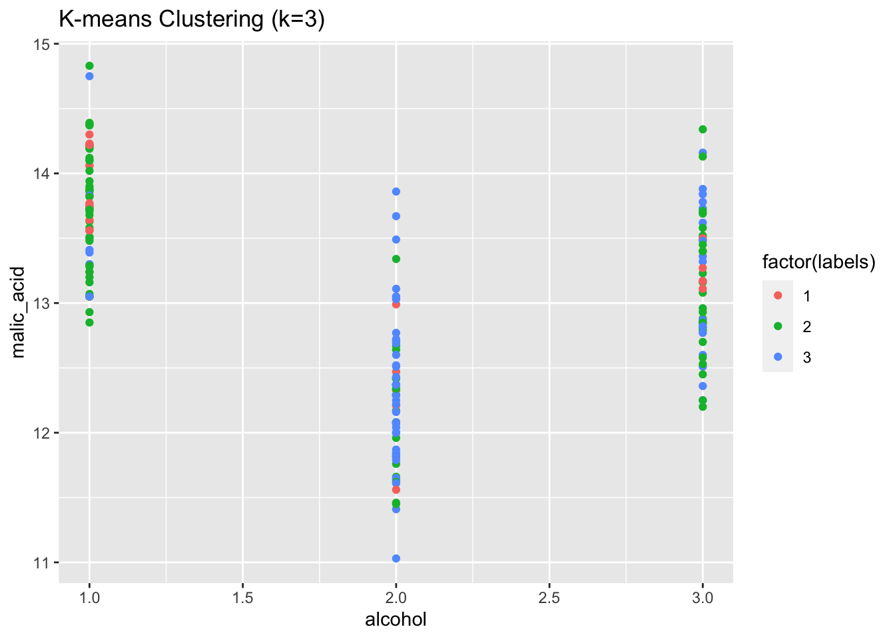

options(repos = c(CRAN = "https://repo.miserver.it.umich.edu/cran/"))
install.packages("ggplot2")
The downloaded binary packages are in
/var/folders/rk/5lvxwjhj7y9_l0r83j1hx_rw0000gn/T//Rtmp9pocRv/downloaded_packageslibrary(ggplot2)Akanksha Singh
November 24, 2023
Clustering or cluster analysis is an unsupervised learning problem.
It is often used as a data analysis technique for discovering interesting patterns in data, such as groups of customers based on their behavior.It involves automatically discovering natural grouping in data. Unlike supervised learning (like predictive modeling), clustering algorithms only interpret the input data and find natural groups or clusters in feature space.
Unlike classification tasks, where data points are assigned to predefined categories, clustering algorithms seek to group data points based on their inherent similarities, revealing underlying relationships that might otherwise go unnoticed.
Clustering can be helpful as a data analysis activity in order to learn more about the problem domain, so-called pattern discovery or knowledge discovery.
For example:
The phylogenetic tree could be considered the result of a manual clustering analysis.
Separating normal data from outliers or anomalies may be considered a clustering problem.
Separating clusters based on their natural behavior is a clustering problem, referred to as market segmentation.
Clustering techniques can be broadly categorized into two main approaches: hierarchical and partitional clustering.
Hierarchical clustering algorithms construct a hierarchy of clusters, gradually merging or splitting data points based on their pairwise distances. This approach produces a nested tree-like structure, allowing for exploration of data at different levels of granularity.
Partitional clustering algorithms, on the other hand, aim to partition the data into a predefined number of clusters. These algorithms typically employ an iterative approach, assigning data points to clusters and then refining the cluster assignments until a stable configuration is reached.
There are many types of clustering algorithms.
Many algorithms use similarity or distance measures between examples in the feature space in an effort to discover dense regions of observations. As such, it is often good practice to scale data prior to using clustering algorithms.
Some clustering algorithms require you to specify or guess at the number of clusters to discover in the data, whereas others require the specification of some minimum distance between observations in which examples may be considered “close” or “connected.”
As such, cluster analysis is an iterative process where subjective evaluation of the identified clusters is fed back into changes to algorithm configuration until a desired or appropriate result is achieved.
The scikit-learn library provides a suite of different clustering algorithms to choose from.
Here we will focus on these popular clustering algorithms:
K-Means
Hierarchical
Each algorithm offers a different approach to the challenge of discovering natural groups in data.
There is no best clustering algorithm, and no easy way to find the best algorithm for your data without using controlled experiments.
The downloaded binary packages are in
/var/folders/rk/5lvxwjhj7y9_l0r83j1hx_rw0000gn/T//Rtmp9pocRv/downloaded_packagesLet’s start by installing the necessary packages for data manipulation (dplyr), k-means clustering (kmeans), and hierarchical clustering (cluster). These packages provide the tools required to perform the clustering analysis and create visualizations.
The downloaded binary packages are in
/var/folders/rk/5lvxwjhj7y9_l0r83j1hx_rw0000gn/T//Rtmp9pocRv/downloaded_packagesWarning: package 'kmeans' is not available for this version of R
A version of this package for your version of R might be available elsewhere,
see the ideas at
https://cran.r-project.org/doc/manuals/r-patched/R-admin.html#Installing-packages
The downloaded binary packages are in
/var/folders/rk/5lvxwjhj7y9_l0r83j1hx_rw0000gn/T//Rtmp9pocRv/downloaded_packagesThis block loads the Wine dataset from the UCI Machine Learning Repository into the R environment. The read.csv() function reads the CSV file and stores the data in a data frame named data. The header = FALSE argument indicates that the first row of the CSV file does not contain column names.
Now we will assign some meaningful names to the columns of the data frame. The names(data) <- c(…) syntax replaces the default column names with the specified ones. This makes the data more understandable and easier to work with.
# Name the columns
names(data) <- c("alcohol", "malic_acid", "ash", "alcalinity_ash", "magnesium", "total_phenols", "flavanoids", "nonflavanoids", "proanthocyanins", "color_intensity", "hue", "od", "proline")
head(data) alcohol malic_acid ash alcalinity_ash magnesium total_phenols flavanoids
1 1 14.23 1.71 2.43 15.6 127 2.80
2 1 13.20 1.78 2.14 11.2 100 2.65
3 1 13.16 2.36 2.67 18.6 101 2.80
4 1 14.37 1.95 2.50 16.8 113 3.85
5 1 13.24 2.59 2.87 21.0 118 2.80
6 1 14.20 1.76 2.45 15.2 112 3.27
nonflavanoids proanthocyanins color_intensity hue od proline NA
1 3.06 0.28 2.29 5.64 1.04 3.92 1065
2 2.76 0.26 1.28 4.38 1.05 3.40 1050
3 3.24 0.30 2.81 5.68 1.03 3.17 1185
4 3.49 0.24 2.18 7.80 0.86 3.45 1480
5 2.69 0.39 1.82 4.32 1.04 2.93 735
6 3.39 0.34 1.97 6.75 1.05 2.85 1450The code below selects the relevant features from the dataset for clustering analysis. In this case, the features include measures of wine characteristics such as alcohol content, acidity, and phenolic compounds. The data[, 1:13] syntax extracts columns 1 to 13 from the data frame and assigns them to the features variable. After that we will perform partitional clustering using the k-means algorithm. The kmeans() function initializes the k-means algorithm with k=3 clusters, meaning that the data will be partitioned into three distinct groups. The algorithm iteratively assigns data points to the nearest cluster centroid, refining the clusters until convergence is reached.
This line retrieves the cluster labels for each data point. The kmeans$cluster object contains the cluster assignments for all data points.
This block generates a visualization of the k-means clustering results using the ggplot2 package. The plot displays the data points colored according to their cluster labels, revealing the groupings identified by the algorithm.
# Visualize K-means clustering
ggplot(data, aes(x = alcohol, y = malic_acid, color = factor(labels))) +
geom_point() +
labs(title = "K-means Clustering (k=3)")
This block performs hierarchical clustering using Ward’s method. The hclust() function constructs a hierarchical tree structure based on the pairwise distances between data points. The dist(features) object calculates the distance matrix between all data points, and the method = “ward.D” argument specifies Ward’s method as the linkage method.
This line generates a dendrogram, a tree-like structure that illustrates the hierarchical relationships between data points. The plot(hclust) function plots the dendrogram, showing the merging of clusters as the tree grows. This line cuts the dendrogram at a specific level to identify three clusters. The cutree() function extracts cluster labels from the dendrogram, and the k = 3 argument sets the number of clusters to extract
Clustering algorithms find applications across diverse domains, including:
Customer segmentation: Clustering customer data can help identify distinct customer groups with shared characteristics, enabling targeted marketing campaigns.
Image segmentation: Clustering algorithms can be used to segment images into meaningful regions, such as identifying objects in a scene.
Anomaly detection: Clustering can be employed to detect anomalies in data by identifying data points that deviate significantly from the established clusters.
Clustering algorithms offer a powerful approach to uncovering hidden patterns and structures within unlabeled data. By grouping data points based on their inherent similarities, clustering techniques can provide valuable insights into the underlying relationships between data points. With the increasing availability of data, clustering algorithms are poised to play an increasingly important role in various fields, aiding in data exploration, pattern recognition, and decision-making.